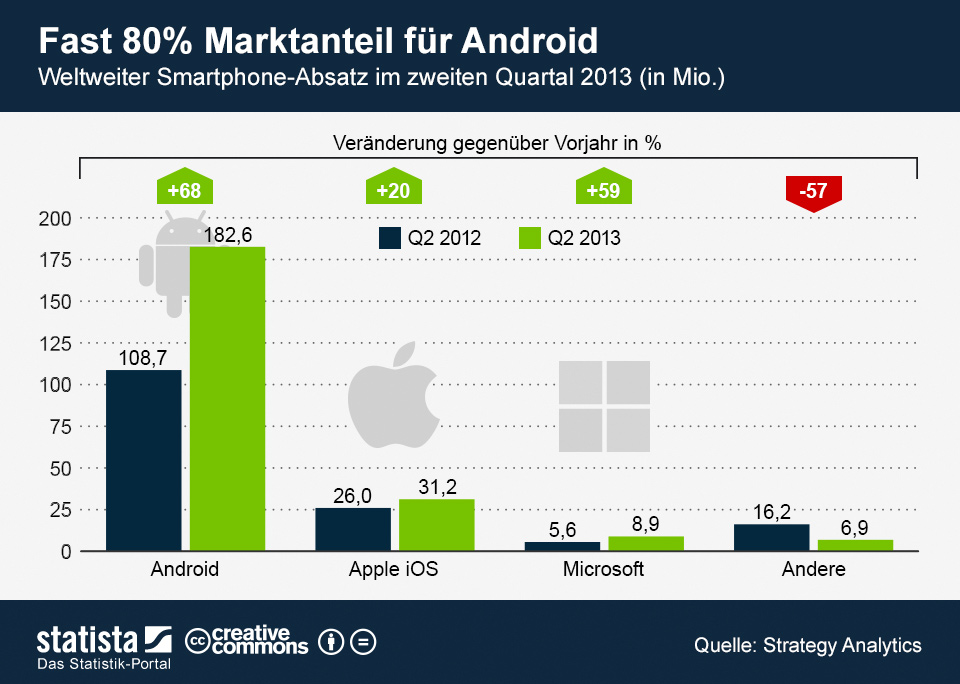

Fast 80 Prozent Marktanteil für Android
182,6 Millionen Android-Smartphones wurden weltweit laut aktuellen Daten von Strategy Analytics im vergangenen Quartal abgesetzt, das entspricht einer Steigerung von 68 Prozent gegenüber dem Vorjahr. Die Zahl der Verkauften iPhones legte um 20 Prozent auf 31,2 Millionen zu. Die Zahl der verkauften Smartphones mit Microsoft-Betriebsystem belief sich auf 8,9 Millionen (+59 Prozent). Der Absatz von Telefonen mit anderen Betriebsystemen wie BlackBerry oder Nokias Symbian brach zwischen April und Juni massiv ein. Android beherrschte damit fast 80 Prozent des globalen Smartphone-Markts (+10 Prozentpunkte). Leicht zulegen konnte auch Microsoft. Apples Marktanteil rutschte dagegen weiter auf nunmehr 13,6 Prozent ab.

- Absatz von Smartphones in Deutschland in den Jahren 2008 bis 2014 (in Millionen Stück)
Absatz von Smartphones in Deutschland bis 2014
- Marktanteile der führenden Hersteller am Absatz von Smartphones weltweit vom 4. Quartal 2009 bis zum 2. Quartal 2014
Marktanteile der Hersteller von Smartphones weltweit bis Q2 2014
- Absatz von Smartphones weltweit in den Jahren 2009 bis 2013 (in Millionen Stück)
Absatz von Smartphones weltweit bis 2013
- Antivirale HIV-Medikamente - Absatzverteilung nach Art der Medikamente bis 2012Antivirale HIV-Medikamente - Absatzverteilung nach Art der Medikamente bis 2012
- Ärzte in Österreich - Arztdichte nach Bundesländern 2012Ärzte in Österreich - Arztdichte nach Bundesländern 2012
- Erdgas aus Russland - Umfang der Erdgaslieferungen nach Europa bis 2012Erdgas aus Russland - Umfang der Erdgaslieferungen nach Europa bis 2012
- Wer darf die Infostatistiken nutzen?
- Die Infografiken von Statista dürfen von allen kommerziellen und nicht-kommerziellen Webseiten kostenlos veröffentlicht werden. Die Veröffentlichung erfolgt unter der Creative Commons-Lizenz CC BY-ND 3.0. Bei der Nutzung der Grafik ist ein Referenzlink auf die URL der Statistik zu setzen.
- Zu welchen Themen veröffentlicht Statista Infografiken?
- Derzeit bietet Statista Infografiken für zwei Bereiche an: Der Infografikdienst "Medien & Technik" veröffentlicht jeden Werktag aktuelle Statistiken aus den Industrien Medien, Internet, Telekommunikation und Unterhaltungselektronik. Unter Infografik "Deutschland" finden Sie aktuelle Statistiken zu den wichtigsten Wirtschaftsdaten in Deutschland sowie zu Themen aus Politik und Gesellschaft.
- Erstellt Statista auch Infografiken in individuellem Design?
-
Für Informationen zu maßgeschneiderten Infografiken
kontaktieren Sie bitte Mathias Brandt
(mathias.brandt@statista.com).